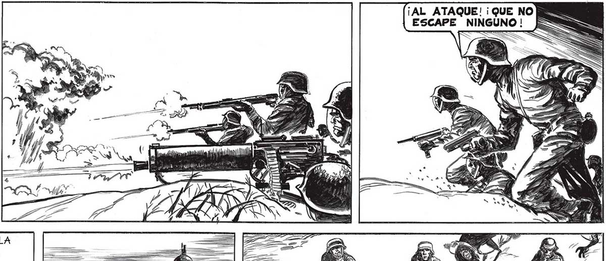
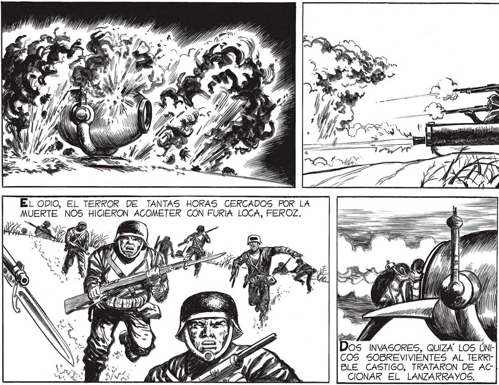

¡AL ATAQUE! ¡QUE NO ESCAPE NINGUNO |! il PS e NW EL ODIO, EL TERROR DE TANTAS HORAS CERCADOS POR LA MUERTE NOS HIGIESCA + ACOMETER CON FURIA LOCA, FEROZ. a Ele, y y/ hb, OS INVASORES, QUIZA LOS ÚNCOS SOBREVIVIENTES AL TERRY BLE CASTIGO, TRATARON DE AC CIONAR EL LANZARRAYOS,. ... A LA QUE NOS HACE PISAR VARIAS VECES UNA ARAÑA YA APLASTADA. PERO NO TUVIMOS MUCHO TIEMPO PA: RA DESAHOGAR EL ODIO QUE NOS, ENLOQUECIA. sy é SON Ñ SES NQUESS. = SS SS ÍS wn QUEDAMOS DUEÑOS DE LA_ POSICION. PERO NO EGUIMOS DESCARGANDO LAS ARMAS CONTRA LOS HUBO “HURRAS” NI JÚBILO... INVASORES; FUE LA NUESTRA UNA REACCION ¡ANALOGA..

